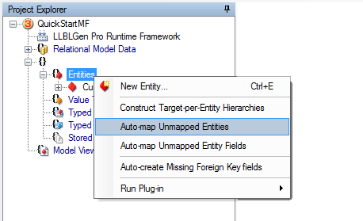
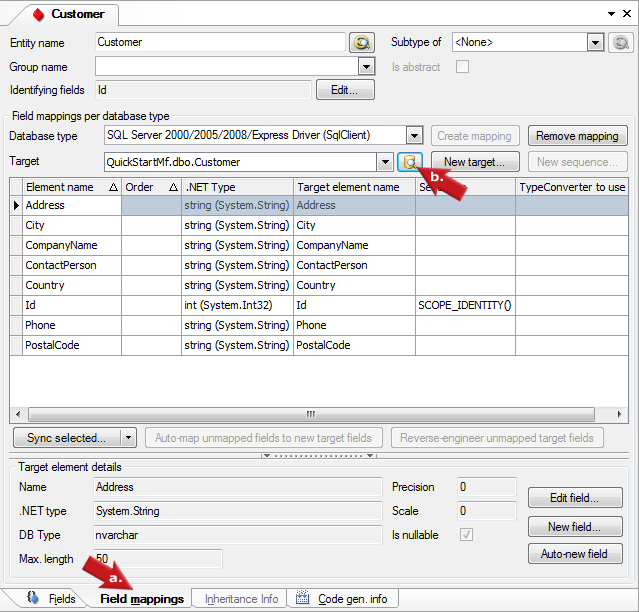
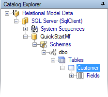
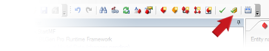

Create meta-data from entity model |
|
|
|
Right-click Entities in the Project Explorer and select
Auto-map Unmapped Entities.
This will make LLBLGen Pro create a new table in the Relational Model Data storage added in step 2 and mappings between the entity you created and the newly created table.
A log is shown what actions have been taken for you.  |
|
|
Right-click Entities in the Project Explorer and select
Auto-map Unmapped Entity Fields.
This will make LLBLGen Pro create new fields in the mapped tables in the Relational Model Data storage and mappings between the entity fields you created and the newly created table fields.
A log is shown what actions have been taken for you. |
|
|
To examine the mappings, click the Field Mappings tab (a.) of the editor of the entity you created. To quickly find the table
created, click the Lookup button (b.) next to the Mapping Target on the Field Mappings tab to go to the node of the table in Catalog Explorer.   |
|
|
The designer can't always automatically update the relational model data on the fly when you make a change in the Abstract Entity Model, as not all actions are 1:1 translatable,
so to complete the process, you have to Validate and Adjust the Relational Model Data by clicking the Validate and Adjust Relational Model Data button on the toolbar.
This action performs a full
Project Validation
and also adjusts the relational model data based on the entity definition. If you don't receive a validation error, everything is setup properly and the relational model data is adjusted.
You should now see a table definition with primary key and fields in the Catalog Explorer.  |
|
|
In Catalog Explorer rename the schema and / or catalog node if you want to have a different name for these in your actual database. |